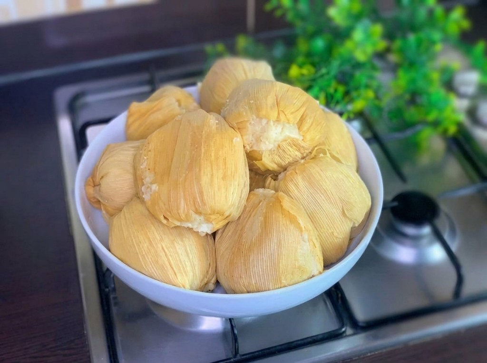

Our Story
Food Made by Instinct, Memory & Birth
At Chef by Birth, we don't just cook – we carry generations of flavor. Every ball of kenkey is fermented for three days using traditional Ghanaian methods passed down through family.
Served with crispy fried fish, our signature shito, and fresh vegetables. From our kitchen in Pennsylvania to your table.
3-Day Fermentation
Traditional method
Leaf Wrapped
Corn husks & plantain
Homemade Shito
Family recipe
